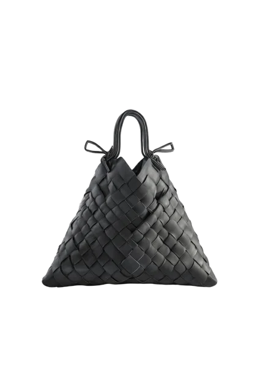
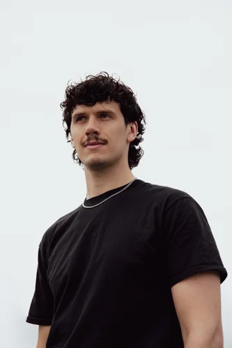

AI versnelt de uitvoering.
Jij bepaalt de richting.
Een beeld genereren is nog geen goed beeld maken. Het verschil zit in je idee, het gevoel en de boodschap.
De belangrijkste inzichten uit de workshop AI voor je beeldmarketing. Om mee te nemen naar je volgende idee.
Bekijk de takeaways
Het vertrekpuntDrie inzichten uit de training.
Een beeld genereren is nog geen goed beeld maken. Het verschil zit in je idee, het gevoel en de boodschap.
Geef richting aan wat je wilt overbrengen. Referentiebeelden helpen om het gewenste gevoel, de kleuren en de sfeer duidelijk te maken.
Klopt het beeld, blijft je aanbod herkenbaar en past het bij je merk? Gebruik AI als hulpmiddel. Jij maakt de afweging en beslist wat je naar buiten brengt.
RCTF helpt je om AI richting te geven.

Heb je een vraag over de workshop, wil je verder met AI voor je beeldmarketing of zoek je een training voor je team? Vertel me waar je mee bezig bent.
info@maxhelmantel.com